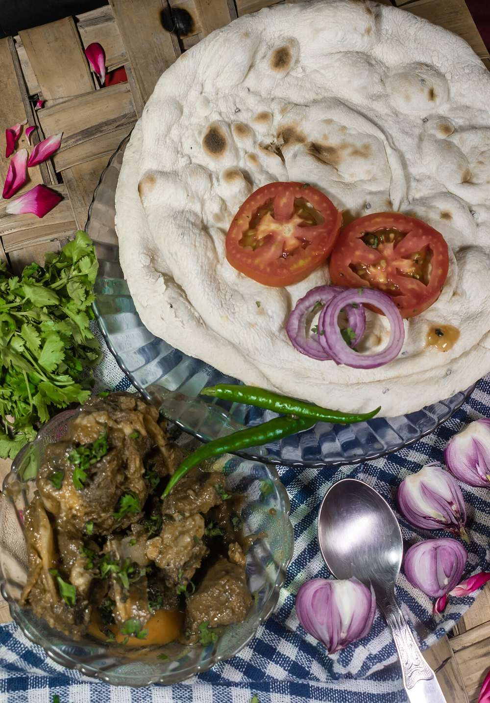

Contains: sesame
Checked against the ingredient list for ten allergens: milk, egg, fish, crustaceans, tree nuts, peanuts, sesame, mustard, soy and gluten. Brands vary, so read the label on anything new to you.
Ingredients
Quantities for 5.
- 900g bone-in goat, cut into 4cm pieces Muttonshoulder and leg with bone give the best gravy
- 18 small, peeled Shallot
- 2 medium, chopped Tomato
- 12 cloves Garlic
- 2 inch piece Ginger
- 3/4 cup, freshly grated Coconut
- 1 tbsp Poppy Seeds
- 2 tsp Fennel Seeds
- 2 tsp whole Black Pepper
- 10, stems removed Dried Red Chilli
- 3 tbsp Coriander Powderor 4 tbsp whole coriander seeds roasted with the other spices
- 1 tsp Cumin Seeds
- 1 tsp Stone Flowerkalpasi
- 1 whole Star Anise
- 1 inch stick Cinnamon
- 4 Cloves
- 3 green pods Cardamom
- 3 sprigs Curry Leaves
- 1 tsp Turmeric
- 5 tbsp Sesame Oilgingelly oil
- to taste Salt
- 600ml Water
- 3 tbsp, chopped Coriander Leavesto finishoptional
Cookware
stovetop, pressure cooker, blender
Before you start
- Bring the mutton to room temperature and pat it dry. Cold wet meat will not brown.
- Marinate it with the turmeric and 1 tsp salt for 30 minutes while you roast and grind the masala.
- Roast and grind the masala first and set it aside; once the meat is browning you will not have time.
Method
- Dry-roast the red chillies, coriander powder, pepper, cumin, fennel, poppy seeds, stone flower, star anise, cinnamon, cloves and cardamom over low heat for 5 minutes until aromatic.Keep the pan moving. Stone flower scorches in seconds and turns the whole masala bitter.
- Add the grated coconut and roast 4 minutes more until it is an even light brown.
- Cool fully, then grind with 150ml water to a smooth paste.
- Heat the gingelly oil in the pressure cooker base, add the curry leaves and let them splutter.
- Add the shallots and fry 8 minutes until deep gold, then add the ginger and garlic ground to a paste and fry 2 minutes.
- Add the mutton and brown it hard over high heat for 8 minutes, turning, until the pieces are seared all over.Do it in two batches if the cooker is crowded. Steamed grey mutton makes a flat kuzhambu.
- Add the tomatoes and cook 4 minutes until they break down.
- Stir in the ground masala and fry on low for 8 minutes until the oil separates and the paste darkens to brick.
- Pour in 450ml water, season with salt, close the cooker and cook for 5 whistles, then on low for 12 minutes.
- Let the pressure drop naturally, open, and simmer uncovered 10 minutes until the gravy thickens and glosses.Releasing pressure early toughens the meat. Give it the full natural drop, about 15 minutes.
- Finish with the chopped coriander and rest 10 minutes before serving with rice or idiyappam.
Storage
Keeps 4 days refrigerated and freezes well for 2 months. Reheat on the stovetop with a splash of water until it just bubbles.
Nutrition Low estimate
High protein: 40 g a serving, 37% of the calories
| Per serving285 g | Per 100 g | |
|---|---|---|
| Calories | 432 kcal | 152 kcal |
| Protein | 40.1 g | 14 g |
| Carbohydrate | 12.6 g | 4 g |
| of which sugars | 2.3 g | 1 g |
| Fibre | 5.5 g | 2 g |
| Fat | 25.3 g | 9 g |
| of which saturated | 7.2 g | 2 g |
| of which unsaturated | 16.2 g | 6 g |
Ingredients given to taste count as zero, so the real figures run a little higher. Nearest database match used for curry leaves, mutton, stone flower. Estimated from raw ingredients using USDA FoodData Central.
Written and checked against sources, not cooked in a test kitchen. Times, yields, allergens and nutrition are worked out rather than measured, so use your own judgement on doneness and on storing. More in About.